Show code
library(httr)
library(jsonlite)
library(dplyr)
library(stringr)
library(purrr)
library(tidyr)
library(ggplot2)
source("wikidata_presence_matrix.R")
source("R/get_wikidata_instances.R")
source("src/wikipedia-tools.R")library(httr)
library(jsonlite)
library(dplyr)
library(stringr)
library(purrr)
library(tidyr)
library(ggplot2)
source("wikidata_presence_matrix.R")
source("R/get_wikidata_instances.R")
source("src/wikipedia-tools.R")Second-level administrative divisions (provinces, departments, cantons, municipalities, etc.) for 10 South American countries. Argentina is split into two classes because Buenos Aires Province uses partidos rather than departments.
Guyana is omitted (P150 hierarchy not populated on Wikidata).
sa_adm2_registry <- tribble(
~country, ~country_qid, ~class_qid, ~class_label, ~n_expected, ~slug,
"Argentina", "Q414", "Q952274", "department of Argentina", 386L, "argentina_dept",
"Argentina", "Q414", "Q13997861", "partido of Buenos Aires Province", 135L, "argentina_partido",
"Bolivia", "Q750", "Q1062593", "province of Bolivia", 112L, "bolivia_prov",
"Chile", "Q298", "Q1153408", "province of Chile", 57L, "chile_prov",
"Colombia", "Q739", "Q2555896", "municipality of Colombia", 1107L, "colombia_muni",
"Ecuador", "Q736", "Q1724017", "canton of Ecuador", 222L, "ecuador_canton",
"Paraguay", "Q733", "Q917092", "municipality of Paraguay", 268L, "paraguay_muni",
"Peru", "Q419", "Q509686", "province of Peru", 205L, "peru_prov",
"Suriname", "Q730", "Q1539014", "ressort of Suriname", 64L, "suriname_ressort",
"Uruguay", "Q77", "Q3685434", "municipality of Uruguay", 126L, "uruguay_muni",
"Venezuela", "Q717", "Q3327920", "municipality of Venezuela", 352L, "venezuela_muni"
)sa_adm2_results <- list()
for (i in seq_len(nrow(sa_adm2_registry))) {
entry <- sa_adm2_registry[i, ]
sa_adm2_results[[entry$slug]] <- fetch_or_resume(
class_qid = entry$class_qid,
slug = entry$slug,
n_expected = entry$n_expected,
prefix = "sa_adm2",
batch_size = 30,
limit = 2000
)
}
sa_adm2_all <- combine_presence_data(sa_adm2_results, sa_adm2_registry) |>
mutate(adm_level = "ADM2", region = "South America", .before = everything())
saveRDS(sa_adm2_all, file.path(cache_dir, "sa_adm2_all.rds"))sa_adm2_all |>
group_by(country, class_label) |>
summarise(
n_units = n(),
en = sum(en, na.rm = TRUE),
es = sum(es, na.rm = TRUE),
pt = if ("pt" %in% names(pick(everything()))) sum(pt, na.rm = TRUE) else NA_integer_,
.groups = "drop"
) |>
mutate(
pct_en = round(100 * en / n_units, 1),
pct_es = round(100 * es / n_units, 1)
) |>
knitr::kable(caption = "SA ADM2: Wikipedia coverage by country and class")| country | class_label | n_units | en | es | pt | pct_en | pct_es |
|---|---|---|---|---|---|---|---|
| Argentina | department of Argentina | 386 | 379 | 385 | 375 | 98.2 | 99.7 |
| Argentina | partido of Buenos Aires Province | 135 | 135 | 135 | 130 | 100.0 | 100.0 |
| Bolivia | province of Bolivia | 112 | 112 | 112 | 111 | 100.0 | 100.0 |
| Chile | province of Chile | 57 | 57 | 57 | 57 | 100.0 | 100.0 |
| Colombia | municipality of Colombia | 1107 | 1100 | 1101 | 816 | 99.4 | 99.5 |
| Ecuador | canton of Ecuador | 222 | 222 | 222 | 73 | 100.0 | 100.0 |
| Paraguay | municipality of Paraguay | 268 | 244 | 247 | 241 | 91.0 | 92.2 |
| Peru | province of Peru | 205 | 201 | 205 | 199 | 98.0 | 100.0 |
| Suriname | ressort of Suriname | 64 | 53 | 50 | 15 | 82.8 | 78.1 |
| Uruguay | municipality of Uruguay | 126 | 21 | 126 | 8 | 16.7 | 100.0 |
| Venezuela | municipality of Venezuela | 352 | 251 | 335 | 332 | 71.3 | 95.2 |
Third-level divisions (municipalities, communes, districts, parishes) for South American countries where a standard ADM3 exists on Wikidata.
Not all countries have a standard ADM3 tier:
Argentina’s 83 municipalities on Wikidata represent a small fraction of the ~2,300 actual municipalities. Colombia’s corregimientos (108) are also sparse. Coverage numbers for these two countries should be read with that caveat.
sa_adm3_registry <- tribble(
~country, ~country_qid, ~class_qid, ~class_label, ~n_expected, ~slug,
"Argentina", "Q414", "Q3243765", "municipality in Argentina", 83L, "argentina_muni",
"Bolivia", "Q750", "Q1062710", "municipality of Bolivia", 341L, "bolivia_muni",
"Chile", "Q298", "Q1840161", "commune of Chile", 485L, "chile_commune",
"Colombia", "Q739", "Q5172823", "corregimiento of Colombia", 108L, "colombia_correg",
"Ecuador", "Q736", "Q2579179", "parish of Ecuador", 568L, "ecuador_parish",
"Peru", "Q419", "Q2179958", "district of Peru", 1892L, "peru_district",
"Venezuela", "Q717", "Q6063801", "parish of Venezuela", 1185L, "venezuela_parish"
)sa_adm3_results <- list()
for (i in seq_len(nrow(sa_adm3_registry))) {
entry <- sa_adm3_registry[i, ]
sa_adm3_results[[entry$slug]] <- fetch_or_resume(
class_qid = entry$class_qid,
slug = entry$slug,
n_expected = entry$n_expected,
prefix = "sa_adm3",
batch_size = 30,
limit = 3000
)
}
sa_adm3_all <- combine_presence_data(sa_adm3_results, sa_adm3_registry) |>
mutate(adm_level = "ADM3", region = "South America", .before = everything())
saveRDS(sa_adm3_all, file.path(cache_dir, "sa_adm3_all.rds"))sa_adm3_all |>
group_by(country, class_label) |>
summarise(
n_units = n(),
en = sum(en, na.rm = TRUE),
es = sum(es, na.rm = TRUE),
.groups = "drop"
) |>
mutate(
pct_en = round(100 * en / n_units, 1),
pct_es = round(100 * es / n_units, 1)
) |>
knitr::kable(caption = "SA ADM3: Wikipedia coverage by country and class")| country | class_label | n_units | en | es | pct_en | pct_es |
|---|---|---|---|---|---|---|
| Argentina | municipality in Argentina | 83 | 61 | 81 | 73.5 | 97.6 |
| Bolivia | municipality of Bolivia | 341 | 195 | 194 | 57.2 | 56.9 |
| Chile | commune of Chile | 485 | 292 | 422 | 60.2 | 87.0 |
| Colombia | corregimiento of Colombia | 108 | 8 | 90 | 7.4 | 83.3 |
| Ecuador | parish of Ecuador | 568 | 66 | 153 | 11.6 | 26.9 |
| Peru | district of Peru | 1892 | 1846 | 1892 | 97.6 | 100.0 |
| Venezuela | parish of Venezuela | 1185 | 49 | 148 | 4.1 | 12.5 |
Second-level administrative divisions for 12 additional countries. Class QIDs were validated via direct P31 SPARQL counts (June 2026).
Belize is excluded — its 6 districts are ADM1, with no standard ADM2 below them. El Salvador’s 45 Wikidata-typed municipalities (of ~262 actual) represent partial coverage.
newc_adm2_registry <- tribble(
~country, ~country_qid, ~class_qid, ~class_label, ~n_expected, ~slug,
"Mexico", "Q96", "Q1952852", "municipality of Mexico", 2465L, "mexico_muni",
"Mexico", "Q96", "Q2734310", "territorial demarcation of Mexico City", 16L, "mexico_cdmx",
"Guatemala", "Q774", "Q1872284", "municipality of Guatemala", 341L, "guatemala_muni",
"El Salvador", "Q792", "Q3556889", "municipality of El Salvador", 45L, "elsalvador_muni",
"Honduras", "Q783", "Q2602693", "municipality of Honduras", 298L, "honduras_muni",
"Nicaragua", "Q811", "Q318727", "municipality of Nicaragua", 153L, "nicaragua_muni",
"Costa Rica", "Q800", "Q953822", "canton of Costa Rica", 84L, "costarica_canton",
"Panama", "Q804", "Q3710488", "district of Panama", 81L, "panama_district",
"Cuba", "Q241", "Q558330", "municipality of Cuba", 171L, "cuba_muni",
"Dominican Republic", "Q786", "Q6005581", "municipality of the Dominican Republic", 157L, "domrep_muni",
"Haiti", "Q790", "Q1665357", "arrondissement of Haiti", 43L, "haiti_arrond",
"Puerto Rico", "Q1183", "Q263639", "municipality of Puerto Rico", 78L, "puertorico_muni"
)newc_adm2_results <- list()
for (i in seq_len(nrow(newc_adm2_registry))) {
entry <- newc_adm2_registry[i, ]
newc_adm2_results[[entry$slug]] <- fetch_or_resume(
class_qid = entry$class_qid,
slug = entry$slug,
n_expected = entry$n_expected,
prefix = "newc_adm2",
batch_size = 30,
limit = 3000
)
}
newc_adm2_all <- combine_presence_data(newc_adm2_results, newc_adm2_registry) |>
mutate(adm_level = "ADM2", region = "Central America & Caribbean",
.before = everything())
saveRDS(newc_adm2_all, file.path(cache_dir, "newc_adm2_all.rds"))newc_adm2_all |>
group_by(country, class_label) |>
summarise(
n_units = n(),
en = sum(en, na.rm = TRUE),
es = sum(es, na.rm = TRUE),
.groups = "drop"
) |>
mutate(
pct_en = round(100 * en / n_units, 1),
pct_es = round(100 * es / n_units, 1)
) |>
knitr::kable(caption = "New countries ADM2: Wikipedia coverage")| country | class_label | n_units | en | es | pct_en | pct_es |
|---|---|---|---|---|---|---|
| Costa Rica | canton of Costa Rica | 84 | 84 | 84 | 100.0 | 100.0 |
| Cuba | municipality of Cuba | 171 | 168 | 169 | 98.2 | 98.8 |
| Dominican Republic | municipality of the Dominican Republic | 157 | 157 | 157 | 100.0 | 100.0 |
| El Salvador | municipality of El Salvador | 45 | 1 | 24 | 2.2 | 53.3 |
| Guatemala | municipality of Guatemala | 341 | 341 | 340 | 100.0 | 99.7 |
| Haiti | arrondissement of Haiti | 43 | 42 | 43 | 97.7 | 100.0 |
| Honduras | municipality of Honduras | 298 | 298 | 298 | 100.0 | 100.0 |
| Mexico | municipality of Mexico | 2465 | 2104 | 2462 | 85.4 | 99.9 |
| Mexico | territorial demarcation of Mexico City | 16 | 16 | 16 | 100.0 | 100.0 |
| Nicaragua | municipality of Nicaragua | 153 | 153 | 153 | 100.0 | 100.0 |
| Panama | district of Panama | 81 | 80 | 81 | 98.8 | 100.0 |
| Puerto Rico | municipality of Puerto Rico | 78 | 77 | 77 | 98.7 | 98.7 |
Third-level divisions for the subset of new countries where a viable ADM3 class exists on Wikidata. Countries without a standard or sufficiently populated ADM3 are excluded:
newc_adm3_registry <- tribble(
~country, ~country_qid, ~class_qid, ~class_label, ~n_expected, ~slug,
"Costa Rica", "Q800", "Q2292572", "district of Costa Rica", 495L, "costarica_district",
"Panama", "Q804", "Q3685463", "corregimiento of Panama", 698L, "panama_correg",
"Haiti", "Q790", "Q3685462", "commune of Haiti", 146L, "haiti_commune",
"Puerto Rico", "Q1183", "Q3677932", "barrio of Puerto Rico", 827L, "puertorico_barrio"
)newc_adm3_results <- list()
for (i in seq_len(nrow(newc_adm3_registry))) {
entry <- newc_adm3_registry[i, ]
newc_adm3_results[[entry$slug]] <- fetch_or_resume(
class_qid = entry$class_qid,
slug = entry$slug,
n_expected = entry$n_expected,
prefix = "newc_adm3",
batch_size = 30,
limit = 2000
)
}
newc_adm3_all <- combine_presence_data(newc_adm3_results, newc_adm3_registry) |>
mutate(adm_level = "ADM3", region = "Central America & Caribbean",
.before = everything())
saveRDS(newc_adm3_all, file.path(cache_dir, "newc_adm3_all.rds"))newc_adm3_all |>
group_by(country, class_label) |>
summarise(
n_units = n(),
en = sum(en, na.rm = TRUE),
es = sum(es, na.rm = TRUE),
.groups = "drop"
) |>
mutate(
pct_en = round(100 * en / n_units, 1),
pct_es = round(100 * es / n_units, 1)
) |>
knitr::kable(caption = "New countries ADM3: Wikipedia coverage")| country | class_label | n_units | en | es | pct_en | pct_es |
|---|---|---|---|---|---|---|
| Costa Rica | district of Costa Rica | 495 | 486 | 489 | 98.2 | 98.8 |
| Haiti | commune of Haiti | 146 | 144 | 146 | 98.6 | 100.0 |
| Panama | corregimiento of Panama | 698 | 650 | 684 | 93.1 | 98.0 |
| Puerto Rico | barrio of Puerto Rico | 827 | 827 | 825 | 100.0 | 99.8 |
Brazil has ~5,570 municipalities (Q3184121), far more than any other country in this analysis. The data has been fetched and cached; this section loads from cache. To re-fetch, run fetch_or_resume() with prefix "sa_adm2" and slug "brazil_muni".
brazil_cache <- file.path(cache_dir, "sa_adm2_brazil_df.rds")
if (file.exists(brazil_cache)) {
brazil_df <- readRDS(brazil_cache)
# Ensure consistent column structure
if (!"adm_level" %in% names(brazil_df)) {
brazil_df <- brazil_df |>
mutate(adm_level = "ADM2", region = "South America", .before = everything())
}
cat("Brazil loaded from cache:", nrow(brazil_df), "municipalities\n")
} else {
message("Brazil cache not found at ", brazil_cache, ". ",
"Run the fetch block below to populate it.")
brazil_df <- NULL
}Brazil loaded from cache: 5570 municipalities# Run this block manually when ready (~20-40 min).
# The result is saved to data/cache/sa_adm2_brazil_muni.rds and a flat
# data frame to data/cache/sa_adm2_brazil_df.rds.
brazil_result <- fetch_or_resume(
class_qid = "Q3184121",
slug = "brazil_muni",
n_expected = 5570L,
prefix = "sa_adm2",
batch_size = 20,
limit = 6000
)
brazil_df <- brazil_result$data |>
mutate(
country = "Brazil",
country_qid = "Q155",
class_qid = "Q3184121",
class_label = "municipality of Brazil",
slug = "brazil_muni",
adm_level = "ADM2",
region = "South America",
.before = everything()
)
saveRDS(brazil_df, file.path(cache_dir, "sa_adm2_brazil_df.rds"))if (!is.null(brazil_df)) {
brazil_df |>
summarise(
n_units = n(),
en = sum(en, na.rm = TRUE),
es = if ("es" %in% names(pick(everything()))) sum(es, na.rm = TRUE) else NA_integer_,
pt = if ("pt" %in% names(pick(everything()))) sum(pt, na.rm = TRUE) else NA_integer_
) |>
mutate(
pct_en = round(100 * en / n_units, 1),
pct_pt = round(100 * pt / n_units, 1)
) |>
knitr::kable(caption = "Brazil ADM2: Wikipedia coverage")
}| n_units | en | es | pt | pct_en | pct_pt |
|---|---|---|---|---|---|
| 5570 | 5569 | 3712 | 5570 | 100 | 100 |
all_tiers <- list(sa_adm2_all, sa_adm3_all, newc_adm2_all, newc_adm3_all)
if (!is.null(brazil_df)) all_tiers <- c(all_tiers, list(brazil_df))
all_data <- bind_rows(all_tiers)
# Identify language columns (integer 0/1 columns that aren't metadata)
meta_cols <- c("adm_level", "region", "country", "country_qid", "class_qid",
"class_label", "slug", "qid", "label_en", "label_es")
lang_names <- setdiff(names(all_data), meta_cols) |>
{\(x) x[map_lgl(x, ~ is.integer(all_data[[.x]]))]}()
# Remove "commons" if present (Wikimedia Commons, not a Wikipedia)
lang_names <- setdiff(lang_names, "commons")
# Ensure the three key languages exist as columns
for (lang in c("en", "es", "pt")) {
if (!lang %in% names(all_data)) all_data[[lang]] <- 0L
}library(rnaturalearth)
library(sf)
library(patchwork)
coverage <- all_data |>
group_by(region, country, adm_level) |>
summarise(
n_units = n(),
pct_en = round(100 * sum(en, na.rm = TRUE) / n(), 1),
pct_es = round(100 * sum(es, na.rm = TRUE) / n(), 1),
pct_pt = round(100 * sum(pt, na.rm = TRUE) / n(), 1),
.groups = "drop"
) |>
pivot_longer(
cols = starts_with("pct_"),
names_to = "language",
values_to = "pct"
) |>
mutate(
language = recode(language,
pct_en = "English", pct_es = "Spanish", pct_pt = "Portuguese"),
language = factor(language, levels = c("English", "Spanish", "Portuguese")),
label = paste0(round(pct), "%")
)
# Country name → ISO 3166-1 alpha-3
latam_iso <- c(
"Argentina" = "ARG", "Bolivia" = "BOL", "Brazil" = "BRA",
"Chile" = "CHL", "Colombia" = "COL", "Ecuador" = "ECU",
"Paraguay" = "PRY", "Peru" = "PER", "Suriname" = "SUR",
"Uruguay" = "URY", "Venezuela" = "VEN",
"Mexico" = "MEX", "Guatemala" = "GTM", "El Salvador" = "SLV",
"Honduras" = "HND", "Nicaragua" = "NIC", "Costa Rica" = "CRI",
"Panama" = "PAN", "Cuba" = "CUB",
"Dominican Republic" = "DOM", "Haiti" = "HTI", "Puerto Rico" = "PRI"
)
# Country polygons for the full region (including Brazil as geographic context)
latam_sf <- ne_countries(scale = "medium", returnclass = "sf") |>
filter(iso_a3 %in% latam_iso) |>
select(iso_a3, geometry)
# Interior label points (avoids placing centroids outside concave polygons)
label_pts <- latam_sf |>
st_point_on_surface() |>
mutate(
lon = st_coordinates(geometry)[, 1],
lat = st_coordinates(geometry)[, 2]
) |>
st_drop_geometry()
latam_bbox <- st_bbox(latam_sf)
# Join coverage data onto the sf for one language × ADM-level panel
make_coverage_sf <- function(lang, adm) {
cov <- coverage |>
filter(language == lang, adm_level == adm) |>
mutate(iso_a3 = latam_iso[country]) |>
select(iso_a3, pct, label)
latam_sf |>
left_join(cov, by = "iso_a3") |>
left_join(label_pts, by = "iso_a3")
}
# Choropleth: country polygons filled by % with article.
# Text is white on dark fills (pct > 55) and black on light fills.
choropleth_map <- function(lang, adm) {
df <- make_coverage_sf(lang, adm)
ggplot(df) +
geom_sf(aes(fill = pct), color = "white", linewidth = 0.3) +
geom_text(
aes(x = lon, y = lat, label = label, color = coalesce(pct, 0) > 55),
size = 2.2, fontface = "bold", na.rm = TRUE
) +
scale_color_manual(
values = c("TRUE" = "white", "FALSE" = "black"),
guide = "none"
) +
scale_fill_gradient(
low = "#f7fbff",
high = "#08519c",
limits = c(0, 100),
name = "% covered",
na.value = "grey85"
) +
coord_sf(
xlim = c(latam_bbox["xmin"], latam_bbox["xmax"]),
ylim = c(latam_bbox["ymin"], latam_bbox["ymax"]),
expand = FALSE
) +
labs(title = adm, x = NULL, y = NULL) +
theme_void(base_size = 11) +
theme(
plot.title = element_text(hjust = 0.5, face = "bold", size = 12),
legend.position = "bottom",
legend.key.width = unit(1.5, "cm")
)
}choropleth_map("English", "ADM2") + choropleth_map("English", "ADM3") +
plot_layout(guides = "collect") +
plot_annotation(title = "English Wikipedia") &
theme(legend.position = "bottom")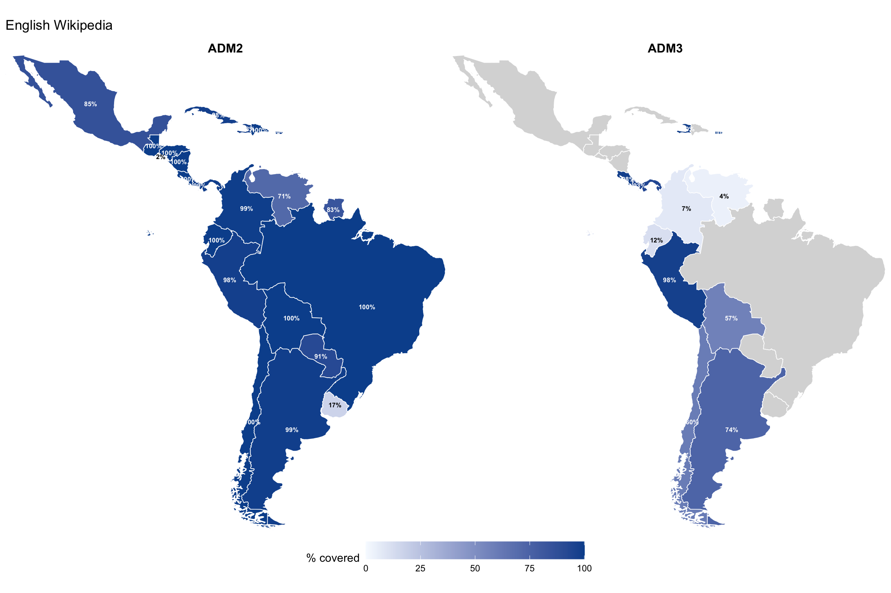
choropleth_map("Spanish", "ADM2") + choropleth_map("Spanish", "ADM3") +
plot_layout(guides = "collect") +
plot_annotation(title = "Spanish Wikipedia") &
theme(legend.position = "bottom")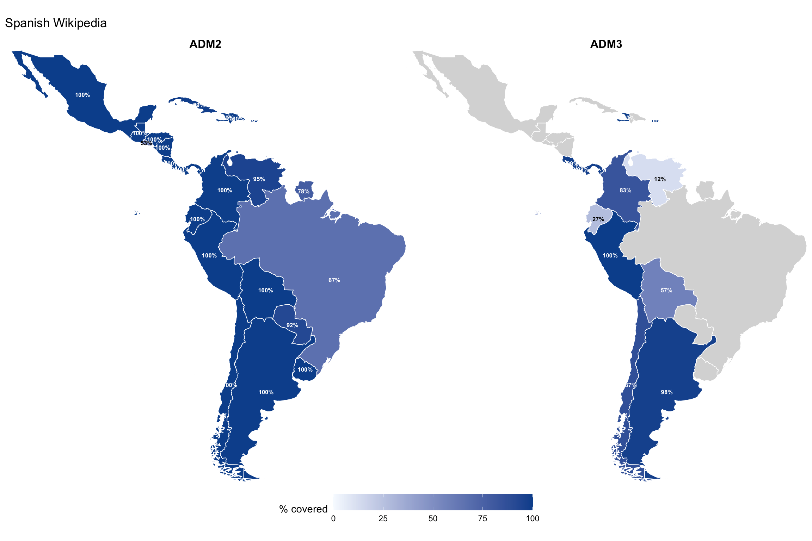
choropleth_map("Portuguese", "ADM2") + choropleth_map("Portuguese", "ADM3") +
plot_layout(guides = "collect") +
plot_annotation(title = "Portuguese Wikipedia") &
theme(legend.position = "bottom")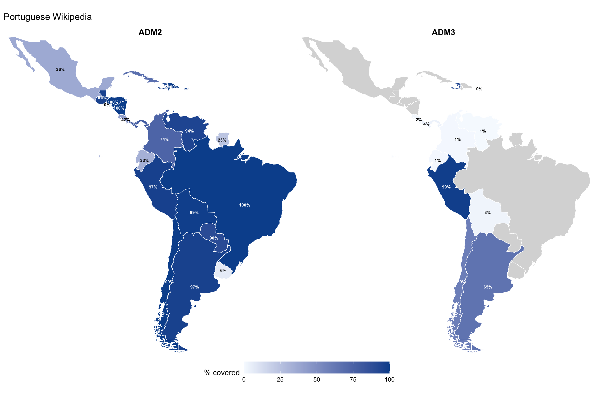
all_data |>
group_by(region, country, adm_level) |>
summarise(
n_units = n(),
en = sum(en, na.rm = TRUE),
es = sum(es, na.rm = TRUE),
pt = sum(pt, na.rm = TRUE),
.groups = "drop"
) |>
mutate(
pct_en = round(100 * en / n_units, 1),
pct_es = round(100 * es / n_units, 1),
pct_pt = round(100 * pt / n_units, 1)
) |>
arrange(region, country, adm_level) |>
knitr::kable(caption = "Coverage counts and percentages by country, level, and language")| region | country | adm_level | n_units | en | es | pt | pct_en | pct_es | pct_pt |
|---|---|---|---|---|---|---|---|---|---|
| Central America & Caribbean | Costa Rica | ADM2 | 84 | 84 | 84 | 35 | 100.0 | 100.0 | 41.7 |
| Central America & Caribbean | Costa Rica | ADM3 | 495 | 486 | 489 | 8 | 98.2 | 98.8 | 1.6 |
| Central America & Caribbean | Cuba | ADM2 | 171 | 168 | 169 | 115 | 98.2 | 98.8 | 67.3 |
| Central America & Caribbean | Dominican Republic | ADM2 | 157 | 157 | 157 | 157 | 100.0 | 100.0 | 100.0 |
| Central America & Caribbean | El Salvador | ADM2 | 45 | 1 | 24 | 0 | 2.2 | 53.3 | 0.0 |
| Central America & Caribbean | Guatemala | ADM2 | 341 | 341 | 340 | 328 | 100.0 | 99.7 | 96.2 |
| Central America & Caribbean | Haiti | ADM2 | 43 | 42 | 43 | 42 | 97.7 | 100.0 | 97.7 |
| Central America & Caribbean | Haiti | ADM3 | 146 | 144 | 146 | 138 | 98.6 | 100.0 | 94.5 |
| Central America & Caribbean | Honduras | ADM2 | 298 | 298 | 298 | 297 | 100.0 | 100.0 | 99.7 |
| Central America & Caribbean | Mexico | ADM2 | 2481 | 2120 | 2478 | 905 | 85.4 | 99.9 | 36.5 |
| Central America & Caribbean | Nicaragua | ADM2 | 153 | 153 | 153 | 153 | 100.0 | 100.0 | 100.0 |
| Central America & Caribbean | Panama | ADM2 | 81 | 80 | 81 | 65 | 98.8 | 100.0 | 80.2 |
| Central America & Caribbean | Panama | ADM3 | 698 | 650 | 684 | 25 | 93.1 | 98.0 | 3.6 |
| Central America & Caribbean | Puerto Rico | ADM2 | 78 | 77 | 77 | 77 | 98.7 | 98.7 | 98.7 |
| Central America & Caribbean | Puerto Rico | ADM3 | 827 | 827 | 825 | 0 | 100.0 | 99.8 | 0.0 |
| South America | Argentina | ADM2 | 521 | 514 | 520 | 505 | 98.7 | 99.8 | 96.9 |
| South America | Argentina | ADM3 | 83 | 61 | 81 | 54 | 73.5 | 97.6 | 65.1 |
| South America | Bolivia | ADM2 | 112 | 112 | 112 | 111 | 100.0 | 100.0 | 99.1 |
| South America | Bolivia | ADM3 | 341 | 195 | 194 | 9 | 57.2 | 56.9 | 2.6 |
| South America | Brazil | ADM2 | 5570 | 5569 | 3712 | 5570 | 100.0 | 66.6 | 100.0 |
| South America | Chile | ADM2 | 57 | 57 | 57 | 57 | 100.0 | 100.0 | 100.0 |
| South America | Chile | ADM3 | 485 | 292 | 422 | 285 | 60.2 | 87.0 | 58.8 |
| South America | Colombia | ADM2 | 1107 | 1100 | 1101 | 816 | 99.4 | 99.5 | 73.7 |
| South America | Colombia | ADM3 | 108 | 8 | 90 | 1 | 7.4 | 83.3 | 0.9 |
| South America | Ecuador | ADM2 | 222 | 222 | 222 | 73 | 100.0 | 100.0 | 32.9 |
| South America | Ecuador | ADM3 | 568 | 66 | 153 | 5 | 11.6 | 26.9 | 0.9 |
| South America | Paraguay | ADM2 | 268 | 244 | 247 | 241 | 91.0 | 92.2 | 89.9 |
| South America | Peru | ADM2 | 205 | 201 | 205 | 199 | 98.0 | 100.0 | 97.1 |
| South America | Peru | ADM3 | 1892 | 1846 | 1892 | 1869 | 97.6 | 100.0 | 98.8 |
| South America | Suriname | ADM2 | 64 | 53 | 50 | 15 | 82.8 | 78.1 | 23.4 |
| South America | Uruguay | ADM2 | 126 | 21 | 126 | 8 | 16.7 | 100.0 | 6.3 |
| South America | Venezuela | ADM2 | 352 | 251 | 335 | 332 | 71.3 | 95.2 | 94.3 |
| South America | Venezuela | ADM3 | 1185 | 49 | 148 | 7 | 4.1 | 12.5 | 0.6 |
How many Wikipedia language editions cover each administrative unit?
breadth <- all_data |>
rowwise() |>
mutate(n_langs = sum(c_across(all_of(lang_names)), na.rm = TRUE)) |>
ungroup()breadth |>
group_by(region, country, adm_level) |>
summarise(
median_langs = median(n_langs),
mean_langs = round(mean(n_langs), 1),
max_langs = max(n_langs),
.groups = "drop"
) |>
arrange(region, country, adm_level) |>
knitr::kable(caption = "Wikipedia language breadth per unit")| region | country | adm_level | median_langs | mean_langs | max_langs |
|---|---|---|---|---|---|
| Central America & Caribbean | Costa Rica | ADM2 | 13 | 13.2 | 18 |
| Central America & Caribbean | Costa Rica | ADM3 | 4 | 5.3 | 59 |
| Central America & Caribbean | Cuba | ADM2 | 15 | 18.7 | 75 |
| Central America & Caribbean | Dominican Republic | ADM2 | 10 | 12.7 | 45 |
| Central America & Caribbean | El Salvador | ADM2 | 1 | 0.6 | 2 |
| Central America & Caribbean | Guatemala | ADM2 | 11 | 12.4 | 134 |
| Central America & Caribbean | Haiti | ADM2 | 15 | 15.8 | 36 |
| Central America & Caribbean | Haiti | ADM3 | 14 | 16.0 | 131 |
| Central America & Caribbean | Honduras | ADM2 | 12 | 13.5 | 59 |
| Central America & Caribbean | Mexico | ADM2 | 15 | 15.2 | 93 |
| Central America & Caribbean | Nicaragua | ADM2 | 12 | 15.8 | 138 |
| Central America & Caribbean | Panama | ADM2 | 9 | 9.0 | 22 |
| Central America & Caribbean | Panama | ADM3 | 5 | 5.7 | 36 |
| Central America & Caribbean | Puerto Rico | ADM2 | 23 | 25.5 | 100 |
| Central America & Caribbean | Puerto Rico | ADM3 | 3 | 3.5 | 10 |
| South America | Argentina | ADM2 | 14 | 14.5 | 49 |
| South America | Argentina | ADM3 | 7 | 9.8 | 99 |
| South America | Bolivia | ADM2 | 20 | 19.9 | 24 |
| South America | Bolivia | ADM3 | 7 | 6.8 | 14 |
| South America | Brazil | ADM2 | 25 | 26.1 | 253 |
| South America | Chile | ADM2 | 29 | 30.6 | 91 |
| South America | Chile | ADM3 | 18 | 14.2 | 203 |
| South America | Colombia | ADM2 | 20 | 21.8 | 237 |
| South America | Colombia | ADM3 | 1 | 1.2 | 4 |
| South America | Ecuador | ADM2 | 12 | 12.2 | 17 |
| South America | Ecuador | ADM3 | 1 | 2.1 | 28 |
| South America | Paraguay | ADM2 | 9 | 10.9 | 65 |
| South America | Peru | ADM2 | 18 | 17.9 | 35 |
| South America | Peru | ADM3 | 11 | 10.7 | 19 |
| South America | Suriname | ADM2 | 6 | 6.8 | 32 |
| South America | Uruguay | ADM2 | 2 | 2.5 | 7 |
| South America | Venezuela | ADM2 | 9 | 9.1 | 22 |
| South America | Venezuela | ADM3 | 1 | 1.2 | 11 |
breadth |>
mutate(country = reorder(country, n_langs, FUN = median)) |>
ggplot(aes(x = n_langs, y = country, fill = adm_level)) +
geom_boxplot(outlier.size = 0.5, alpha = 0.7) +
facet_grid(region ~ ., scales = "free_y", space = "free_y") +
labs(x = "Number of Wikipedia languages with an article",
y = NULL, fill = "Admin level") +
theme_minimal(base_size = 13)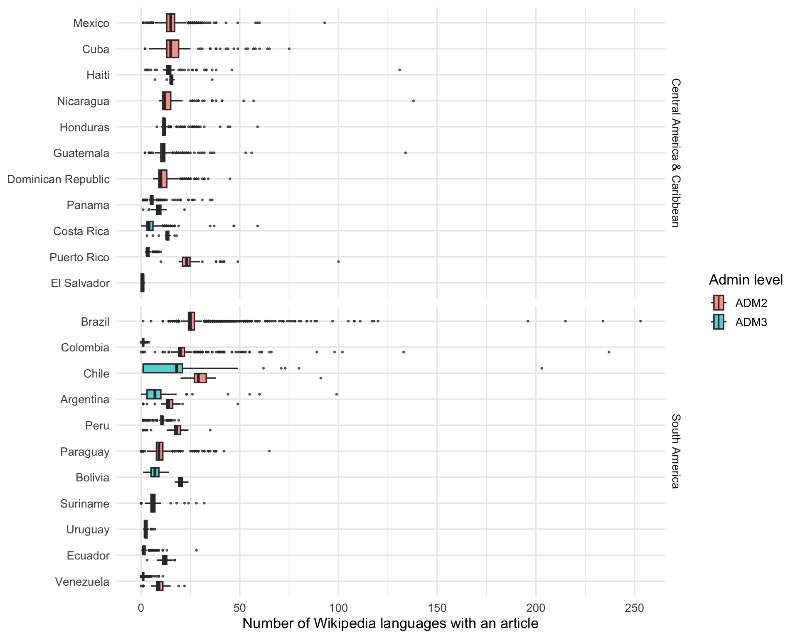
Which language Wikipedias cover the most administrative units across all countries?
all_data |>
summarise(across(all_of(lang_names), ~ sum(.x, na.rm = TRUE))) |>
pivot_longer(everything(), names_to = "language", values_to = "n_articles") |>
mutate(
pct_of_total = round(100 * n_articles / nrow(all_data), 1)
) |>
arrange(desc(n_articles)) |>
slice_head(n = 25) |>
knitr::kable(caption = "Top 25 Wikipedia languages by number of admin-unit articles")| language | n_articles | pct_of_total |
|---|---|---|
| en | 16489 | 85.2 |
| ceb | 15887 | 82.0 |
| es | 15715 | 81.2 |
| it | 14966 | 77.3 |
| fr | 13276 | 68.6 |
| zh | 12741 | 65.8 |
| pt | 12502 | 64.6 |
| sv | 11945 | 61.7 |
| ka | 9928 | 51.3 |
| nl | 9668 | 49.9 |
| eu | 9151 | 47.3 |
| ru | 9127 | 47.1 |
| vi | 8943 | 46.2 |
| tt | 8109 | 41.9 |
| de | 8057 | 41.6 |
| war | 7330 | 37.9 |
| eo | 7209 | 37.2 |
| pl | 6962 | 36.0 |
| no | 6923 | 35.8 |
| uz | 6200 | 32.0 |
| ro | 6190 | 32.0 |
| ce | 5590 | 28.9 |
| bpy | 5027 | 26.0 |
| kk | 4622 | 23.9 |
| mzn | 4521 | 23.3 |
For countries with both ADM2 and ADM3 data, how does Wikipedia coverage change at finer geographic granularity?
countries_with_both <- all_data |>
filter(adm_level %in% c("ADM2", "ADM3")) |>
group_by(country) |>
filter(n_distinct(adm_level) == 2) |>
pull(country) |>
unique()
dropoff <- all_data |>
filter(country %in% countries_with_both) |>
group_by(region, country, adm_level) |>
summarise(
n_units = n(),
pct_en = round(100 * sum(en, na.rm = TRUE) / n(), 1),
pct_es = round(100 * sum(es, na.rm = TRUE) / n(), 1),
pct_pt = round(100 * sum(pt, na.rm = TRUE) / n(), 1),
.groups = "drop"
) |>
pivot_longer(
cols = starts_with("pct_"),
names_to = "language",
values_to = "pct"
) |>
mutate(
language = recode(language,
pct_en = "English", pct_es = "Spanish", pct_pt = "Portuguese"),
language = factor(language, levels = c("English", "Spanish", "Portuguese"))
)
ggplot(dropoff, aes(x = adm_level, y = pct, group = country, color = country)) +
geom_line(linewidth = 0.8) +
geom_point(size = 2.5) +
facet_grid(region ~ language, scales = "free_y", space = "free_y") +
scale_y_continuous(limits = c(0, NA)) +
labs(x = "Administrative level", y = "% with Wikipedia article",
color = "Country") +
theme_minimal(base_size = 12) +
theme(legend.position = "bottom")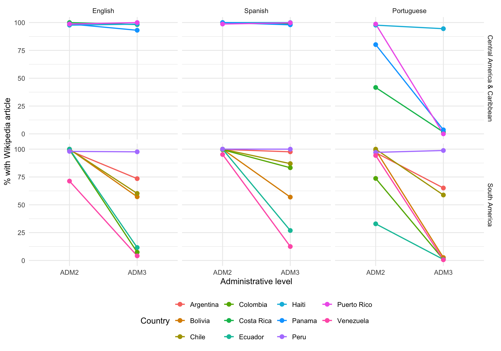
tri_data <- all_data |>
group_by(region, country, adm_level) |>
summarise(
n_units = n(),
English = round(100 * sum(en, na.rm = TRUE) / n(), 1),
Spanish = round(100 * sum(es, na.rm = TRUE) / n(), 1),
Portuguese = round(100 * sum(pt, na.rm = TRUE) / n(), 1),
.groups = "drop"
) |>
pivot_longer(
cols = c(English, Spanish, Portuguese),
names_to = "language",
values_to = "pct"
) |>
mutate(
language = factor(language, levels = c("English", "Spanish", "Portuguese")),
country = reorder(country, pct, FUN = max)
)
ggplot(tri_data, aes(x = pct, y = country, fill = language)) +
geom_col(position = position_dodge2(preserve = "single", padding = 0.1)) +
facet_grid(region ~ adm_level, scales = "free_y", space = "free_y") +
scale_fill_manual(values = c(English = "#4477AA", Spanish = "#EE6677",
Portuguese = "#228833")) +
labs(x = "% of units with Wikipedia article", y = NULL, fill = "Language") +
theme_minimal(base_size = 12) +
theme(legend.position = "bottom")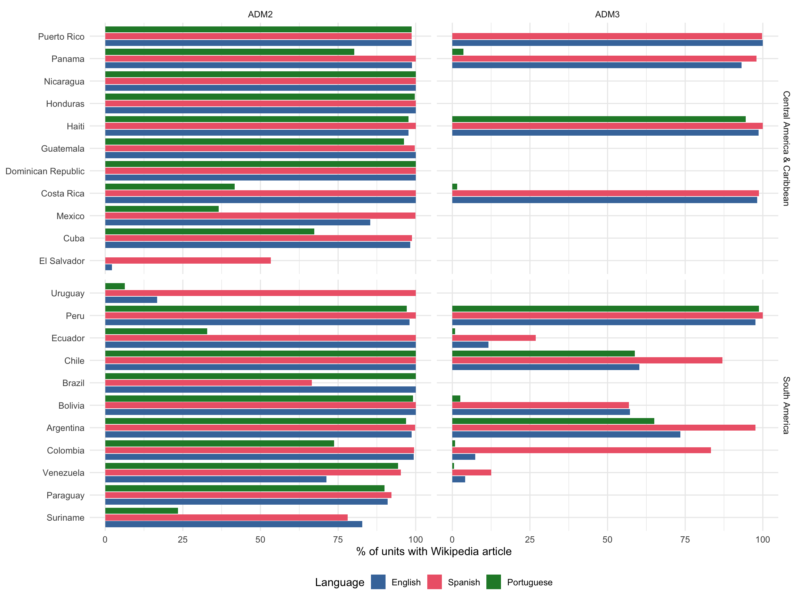
How many of these administrative units have population data (P1082) on Wikidata, and how current is it?
source("src/admin-article-quality.R")
sa_featured_langs <- c("en", "es", "pt", "qu")
sa_featured_labels <- c(en = "English", es = "Spanish",
pt = "Portuguese", qu = "Quechua")all_qids <- all_data$qid
sa_pop <- fetch_wikidata_population(
qids = all_qids,
cache_file = file.path(cache_dir, "sa_population_wikidata.rds"),
batch_size = 200
)
all_data_pop <- all_data |>
left_join(sa_pop, by = "qid")all_data_pop |>
group_by(region, country, adm_level) |>
summarise(
n_units = n(),
has_pop = sum(!is.na(population)),
pct_has_pop = round(100 * has_pop / n_units, 1),
median_pop = median(population, na.rm = TRUE),
.groups = "drop"
) |>
arrange(region, country, adm_level) |>
knitr::kable(caption = "Wikidata population coverage by country and admin level")| region | country | adm_level | n_units | has_pop | pct_has_pop | median_pop |
|---|---|---|---|---|---|---|
| Central America & Caribbean | Costa Rica | ADM2 | 84 | 84 | 100.0 | 46141.5 |
| Central America & Caribbean | Costa Rica | ADM3 | 495 | 488 | 98.6 | 7010.5 |
| Central America & Caribbean | Cuba | ADM2 | 171 | 111 | 64.9 | 45773.0 |
| Central America & Caribbean | Dominican Republic | ADM2 | 157 | 157 | 100.0 | 20934.0 |
| Central America & Caribbean | El Salvador | ADM2 | 45 | 44 | 97.8 | 105108.5 |
| Central America & Caribbean | Guatemala | ADM2 | 341 | 339 | 99.4 | 31706.0 |
| Central America & Caribbean | Haiti | ADM2 | 43 | 2 | 4.7 | 82887.0 |
| Central America & Caribbean | Haiti | ADM3 | 146 | 90 | 61.6 | 39708.5 |
| Central America & Caribbean | Honduras | ADM2 | 298 | 298 | 100.0 | 11404.5 |
| Central America & Caribbean | Mexico | ADM2 | 2481 | 1830 | 73.8 | 11286.0 |
| Central America & Caribbean | Nicaragua | ADM2 | 153 | 153 | 100.0 | 18633.0 |
| Central America & Caribbean | Panama | ADM2 | 81 | 13 | 16.0 | 23525.0 |
| Central America & Caribbean | Panama | ADM3 | 698 | 32 | 4.6 | 8704.5 |
| Central America & Caribbean | Puerto Rico | ADM2 | 78 | 78 | 100.0 | 31152.5 |
| Central America & Caribbean | Puerto Rico | ADM3 | 827 | 2 | 0.2 | 53021.5 |
| South America | Argentina | ADM2 | 521 | 502 | 96.4 | 28176.5 |
| South America | Argentina | ADM3 | 83 | 61 | 73.5 | 8455.0 |
| South America | Bolivia | ADM2 | 112 | 112 | 100.0 | 37290.0 |
| South America | Bolivia | ADM3 | 341 | 340 | 99.7 | 12460.5 |
| South America | Brazil | ADM2 | 5570 | 5569 | 100.0 | 11355.0 |
| South America | Chile | ADM2 | 57 | 57 | 100.0 | 185618.0 |
| South America | Chile | ADM3 | 485 | 278 | 57.3 | 11350.5 |
| South America | Colombia | ADM2 | 1107 | 650 | 58.7 | 23015.0 |
| South America | Colombia | ADM3 | 108 | 1 | 0.9 | 4000.0 |
| South America | Ecuador | ADM2 | 222 | 221 | 99.5 | 25655.0 |
| South America | Ecuador | ADM3 | 568 | 31 | 5.5 | 4500.0 |
| South America | Paraguay | ADM2 | 268 | 79 | 29.5 | 25363.0 |
| South America | Peru | ADM2 | 205 | 196 | 95.6 | 55269.5 |
| South America | Peru | ADM3 | 1892 | 1874 | 99.0 | 3828.5 |
| South America | Suriname | ADM2 | 64 | 14 | 21.9 | 5448.5 |
| South America | Uruguay | ADM2 | 126 | 7 | 5.6 | 2902.0 |
| South America | Venezuela | ADM2 | 352 | 251 | 71.3 | 38648.0 |
| South America | Venezuela | ADM3 | 1185 | 112 | 9.5 | 10927.5 |
all_data_pop |>
filter(!is.na(pop_year)) |>
count(region, adm_level, pop_year) |>
ggplot(aes(x = pop_year, y = n)) +
scale_x_continuous(limits = c(1990, 2030)) +
geom_col() +
facet_grid(region ~ adm_level, scales = "free_y") +
labs(x = "Census / estimate year", y = "Number of admin units") +
theme_minimal(base_size = 12)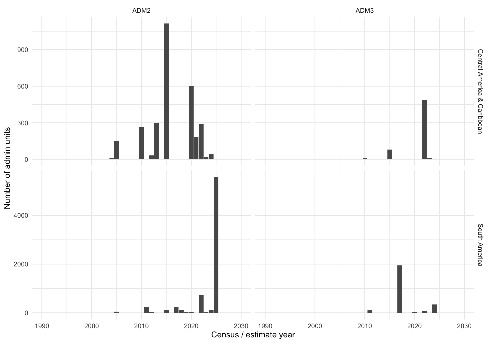
For administrative units that have Wikipedia articles in the four featured languages (English, Spanish, Portuguese, Quechua), we fetch the article wikitext and compute quality metrics: article length, citation count, and infobox field coverage.
# Collect all cache file paths for the presence data
sa_cache_files <- c(
# ADM2
file.path(cache_dir, paste0("sa_adm2_", sa_adm2_registry$slug, ".rds")),
# ADM3
file.path(cache_dir, paste0("sa_adm3_", sa_adm3_registry$slug, ".rds")),
# New countries ADM2
file.path(cache_dir, paste0("newc_adm2_", newc_adm2_registry$slug, ".rds")),
# New countries ADM3
file.path(cache_dir, paste0("newc_adm3_", newc_adm3_registry$slug, ".rds"))
)
# Add Brazil if available
brazil_raw_cache <- file.path(cache_dir, "sa_adm2_brazil_muni.rds")
if (file.exists(brazil_raw_cache)) {
sa_cache_files <- c(sa_cache_files, brazil_raw_cache)
}
# Keep only files that exist
sa_cache_files <- sa_cache_files[file.exists(sa_cache_files)]
sa_quality <- run_article_quality_pipeline(
cache_files = sa_cache_files,
languages = sa_featured_langs,
wikitext_cache_base = "wikipedia-pages/sa_admin",
quality_cache_file = file.path(cache_dir, "sa_article_quality.rds"),
delay = 0.5
)# Join quality data back to presence data for country/class context
sa_quality_joined <- sa_quality |>
left_join(
all_data |>
select(qid, region, country, adm_level, class_label) |>
distinct(),
by = "qid"
)sa_quality_joined |>
mutate(language = sa_featured_labels[lang]) |>
group_by(region, country, adm_level, language) |>
summarise(n_articles = n(), .groups = "drop") |>
pivot_wider(names_from = language, values_from = n_articles, values_fill = 0L) |>
arrange(region, country, adm_level) |>
knitr::kable(caption = "Number of articles fetched per country, level, and language")| region | country | adm_level | English | Portuguese | Spanish | Quechua |
|---|---|---|---|---|---|---|
| Central America & Caribbean | Costa Rica | ADM2 | 84 | 35 | 84 | 0 |
| Central America & Caribbean | Costa Rica | ADM3 | 486 | 8 | 489 | 4 |
| Central America & Caribbean | Cuba | ADM2 | 168 | 115 | 169 | 7 |
| Central America & Caribbean | Dominican Republic | ADM2 | 157 | 157 | 157 | 0 |
| Central America & Caribbean | El Salvador | ADM2 | 1 | 0 | 24 | 0 |
| Central America & Caribbean | Guatemala | ADM2 | 341 | 328 | 340 | 1 |
| Central America & Caribbean | Haiti | ADM2 | 42 | 42 | 43 | 0 |
| Central America & Caribbean | Haiti | ADM3 | 144 | 138 | 146 | 1 |
| Central America & Caribbean | Honduras | ADM2 | 298 | 297 | 298 | 11 |
| Central America & Caribbean | Mexico | ADM2 | 2120 | 905 | 2478 | 11 |
| Central America & Caribbean | Nicaragua | ADM2 | 153 | 153 | 153 | 1 |
| Central America & Caribbean | Panama | ADM2 | 80 | 65 | 81 | 0 |
| Central America & Caribbean | Panama | ADM3 | 650 | 25 | 684 | 0 |
| Central America & Caribbean | Puerto Rico | ADM2 | 77 | 77 | 77 | 1 |
| Central America & Caribbean | Puerto Rico | ADM3 | 827 | 0 | 825 | 0 |
| South America | Argentina | ADM2 | 514 | 505 | 520 | 2 |
| South America | Argentina | ADM3 | 61 | 54 | 81 | 2 |
| South America | Bolivia | ADM2 | 112 | 111 | 112 | 112 |
| South America | Bolivia | ADM3 | 195 | 9 | 194 | 323 |
| South America | Brazil | ADM2 | 5569 | 5570 | 3712 | 25 |
| South America | Chile | ADM2 | 57 | 57 | 57 | 15 |
| South America | Chile | ADM3 | 292 | 285 | 422 | 23 |
| South America | Colombia | ADM2 | 1100 | 816 | 1101 | 34 |
| South America | Colombia | ADM3 | 8 | 1 | 90 | 0 |
| South America | Ecuador | ADM2 | 222 | 73 | 222 | 215 |
| South America | Ecuador | ADM3 | 66 | 5 | 153 | 227 |
| South America | Paraguay | ADM2 | 244 | 241 | 247 | 2 |
| South America | Peru | ADM2 | 201 | 199 | 205 | 196 |
| South America | Peru | ADM3 | 1846 | 1869 | 1892 | 1851 |
| South America | Suriname | ADM2 | 53 | 15 | 50 | 0 |
| South America | Uruguay | ADM2 | 21 | 8 | 126 | 0 |
| South America | Venezuela | ADM2 | 251 | 332 | 335 | 1 |
| South America | Venezuela | ADM3 | 49 | 7 | 148 | 0 |
sa_quality_joined |>
filter(!is.na(n_chars)) |>
mutate(
language = sa_featured_labels[lang],
country = reorder(country, n_chars, FUN = median, na.rm = TRUE)
) |>
ggplot(aes(x = n_chars, y = country, fill = language)) +
geom_boxplot(outlier.size = 0.3, alpha = 0.7) +
scale_x_log10(labels = scales::comma) +
facet_grid(region ~ adm_level, scales = "free_y", space = "free_y") +
labs(x = "Article length (characters, log scale)", y = NULL, fill = "Language") +
theme_minimal(base_size = 11) +
theme(legend.position = "bottom")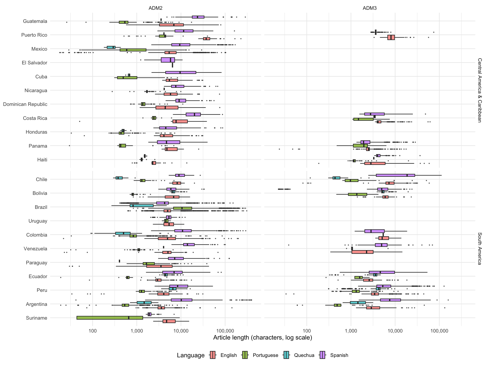
sa_quality_joined |>
mutate(language = sa_featured_labels[lang]) |>
group_by(language, adm_level) |>
summarise(
n_articles = n(),
median_chars = median(n_chars, na.rm = TRUE),
median_citations = median(n_citations, na.rm = TRUE),
median_refs = median(n_refs, na.rm = TRUE),
pct_zero_refs = round(100 * sum(n_refs == 0, na.rm = TRUE) / n(), 1),
.groups = "drop"
) |>
knitr::kable(caption = "Article quality summary by language and admin level")| language | adm_level | n_articles | median_chars | median_citations | median_refs | pct_zero_refs |
|---|---|---|---|---|---|---|
| English | ADM2 | 11865 | 5006.0 | 2 | 5 | 4.6 |
| English | ADM3 | 4624 | 3978.0 | 1 | 5 | 2.2 |
| Portuguese | ADM2 | 10101 | 5123.0 | 0 | 9 | 9.3 |
| Portuguese | ADM3 | 2401 | 1262.0 | 0 | 3 | 11.7 |
| Quechua | ADM2 | 634 | 5036.5 | 0 | 1 | 47.9 |
| Quechua | ADM3 | 2431 | 4309.0 | 0 | 1 | 31.1 |
| Spanish | ADM2 | 10591 | 6627.0 | 0 | 7 | 6.0 |
| Spanish | ADM3 | 5124 | 3864.5 | 0 | 3 | 3.4 |
sa_quality_joined |>
filter(!is.na(n_chars), n_chars > 0) |>
mutate(language = sa_featured_labels[lang]) |>
ggplot(aes(x = n_chars, y = n_refs, color = adm_level)) +
geom_point(alpha = 0.3, size = 0.8) +
scale_x_log10(labels = scales::comma) +
scale_y_log10() +
facet_wrap(~ language) +
labs(x = "Article length (characters)", y = "Number of references",
color = "Admin level") +
theme_minimal(base_size = 12) +
theme(legend.position = "bottom")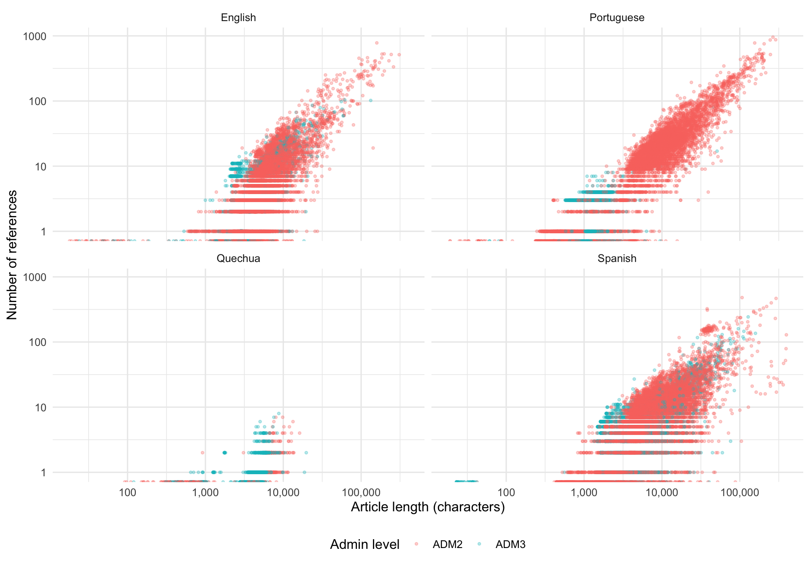
sa_quality_joined |>
mutate(language = sa_featured_labels[lang]) |>
group_by(language, adm_level) |>
summarise(
n_articles = n(),
n_with_infobox = sum(has_infobox, na.rm = TRUE),
pct_infobox = round(100 * n_with_infobox / n_articles, 1),
median_fields = median(n_infobox_fields[has_infobox], na.rm = TRUE),
mean_fields = round(mean(n_infobox_fields[has_infobox], na.rm = TRUE), 1),
.groups = "drop"
) |>
knitr::kable(caption = "Infobox presence and field count by language and admin level")| language | adm_level | n_articles | n_with_infobox | pct_infobox | median_fields | mean_fields |
|---|---|---|---|---|---|---|
| English | ADM2 | 11865 | 11708 | 98.7 | 22.0 | 24.8 |
| English | ADM3 | 4624 | 4581 | 99.1 | 28.0 | 28.2 |
| Portuguese | ADM2 | 10101 | 14 | 0.1 | 69.5 | 65.4 |
| Portuguese | ADM3 | 2401 | 1 | 0.0 | 27.0 | 27.0 |
| Quechua | ADM2 | 634 | 0 | 0.0 | NA | NaN |
| Quechua | ADM3 | 2431 | 0 | 0.0 | NA | NaN |
| Spanish | ADM2 | 10591 | 3 | 0.0 | 0.0 | 0.0 |
| Spanish | ADM3 | 5124 | 0 | 0.0 | NA | NaN |
en_field_freq <- sa_quality_joined |>
filter(lang == "en", has_infobox) |>
summarise_infobox_coverage()
en_field_freq |>
slice_head(n = 30) |>
mutate(field = forcats::fct_reorder(field, n)) |>
ggplot(aes(x = n, y = field)) +
geom_col() +
labs(x = "Number of articles with field", y = NULL,
title = "Top 30 infobox fields — English Wikipedia admin-unit articles") +
theme_minimal(base_size = 11)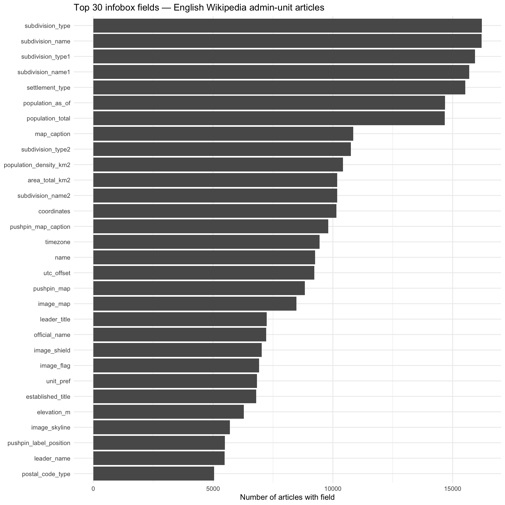
es_field_freq <- sa_quality_joined |>
filter(lang == "es", has_infobox) |>
summarise_infobox_coverage()
es_field_freq |>
slice_head(n = 30) |>
mutate(field = forcats::fct_reorder(field, n)) |>
ggplot(aes(x = n, y = field)) +
geom_col() +
labs(x = "Number of articles with field", y = NULL,
title = "Top 30 infobox fields — Spanish Wikipedia admin-unit articles") +
theme_minimal(base_size = 11)sa_quality_joined |>
filter(has_infobox) |>
mutate(
language = sa_featured_labels[lang],
country = reorder(country, n_infobox_fields, FUN = median, na.rm = TRUE)
) |>
ggplot(aes(x = n_infobox_fields, y = country, fill = language)) +
geom_boxplot(outlier.size = 0.3, alpha = 0.7) +
facet_grid(region ~ adm_level, scales = "free_y", space = "free_y") +
labs(x = "Number of non-blank infobox fields", y = NULL, fill = "Language") +
theme_minimal(base_size = 11) +
theme(legend.position = "bottom")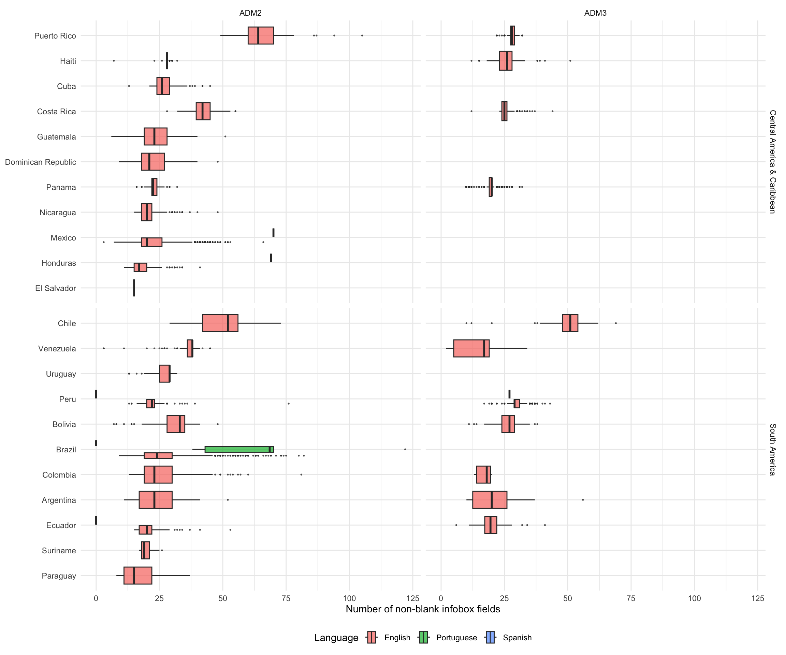
Do articles report a population figure in their infobox, and how current is it? infobox_pop_value and infobox_pop_year are extracted from the article wikitext using the cross-language field map in src/admin-article-quality.R (población / população_total / population_total → canonical population_total; población_año / população_em / population_as_of → canonical population_as_of).
Note: if
infobox_pop_valueandinfobox_pop_yearare absent fromsa_quality_joined, deletedata/cache/sa_article_quality.rdsto trigger a one-time re-extraction of those columns.
sa_quality_joined |>
mutate(language = sa_featured_labels[lang]) |>
group_by(language, adm_level) |>
summarise(
n_articles = n(),
n_with_infobox = sum(has_infobox, na.rm = TRUE),
n_with_pop = sum(!is.na(infobox_pop_value) & has_infobox, na.rm = TRUE),
pct_pop_of_ib = round(100 * n_with_pop / pmax(n_with_infobox, 1), 1),
pct_pop_of_all = round(100 * n_with_pop / n_articles, 1),
.groups = "drop"
) |>
knitr::kable()| language | adm_level | n_articles | n_with_infobox | n_with_pop | pct_pop_of_ib | pct_pop_of_all |
|---|---|---|---|---|---|---|
| English | ADM2 | 11865 | 11708 | 10296 | 87.9 | 86.8 |
| English | ADM3 | 4624 | 4581 | 4339 | 94.7 | 93.8 |
| English | NA | 1 | 1 | 1 | 100.0 | 100.0 |
| Portuguese | ADM2 | 10101 | 8240 | 6941 | 84.2 | 68.7 |
| Portuguese | ADM3 | 2401 | 742 | 644 | 86.8 | 26.8 |
| Portuguese | NA | 1 | 1 | 1 | 100.0 | 100.0 |
| Quechua | ADM2 | 634 | 0 | 0 | 0.0 | 0.0 |
| Quechua | ADM3 | 2431 | 0 | 0 | 0.0 | 0.0 |
| Spanish | ADM2 | 10591 | 10372 | 9131 | 88.0 | 86.2 |
| Spanish | ADM3 | 5124 | 5062 | 3850 | 76.1 | 75.1 |
| Spanish | NA | 1 | 1 | 1 | 100.0 | 100.0 |
sa_quality_joined |>
filter(!is.na(infobox_pop_year)) |>
mutate(language = sa_featured_labels[lang]) |>
count(language, adm_level, infobox_pop_year) |>
ggplot(aes(x = infobox_pop_year, y = n, fill = adm_level)) +
geom_col(position = "stack") +
facet_wrap(~ language, scales = "free_y") +
labs(
x = "Population year in infobox",
y = "Number of articles",
fill = "Admin level"
) +
theme_minimal(base_size = 12) +
theme(legend.position = "bottom")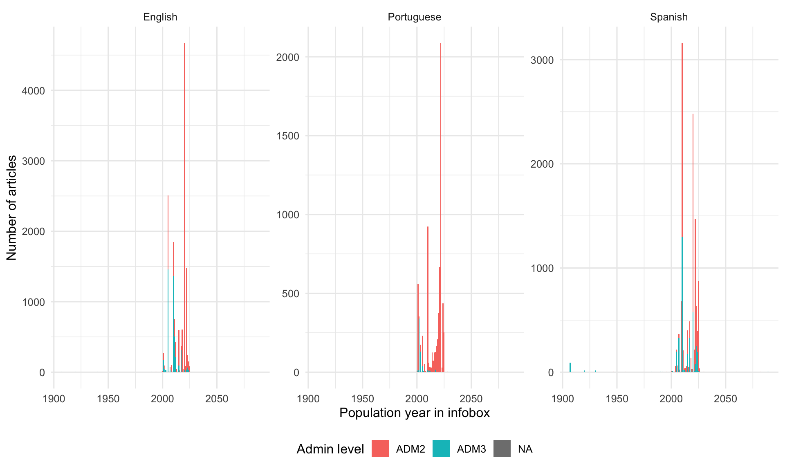
pop_year_summary <- sa_quality_joined |>
filter(!is.na(infobox_pop_year)) |>
mutate(language = sa_featured_labels[lang]) |>
group_by(language, region, country) |>
summarise(
n_with_year = n(),
median_year = as.integer(median(infobox_pop_year)),
pct_post_2020 = round(100 * mean(infobox_pop_year >= 2020), 1),
.groups = "drop"
)
pop_year_summary |>
arrange(language, region, country) |>
knitr::kable()| language | region | country | n_with_year | median_year | pct_post_2020 |
|---|---|---|---|---|---|
| English | Central America & Caribbean | Costa Rica | 567 | 2011 | 0.9 |
| English | Central America & Caribbean | Cuba | 167 | 2022 | 96.4 |
| English | Central America & Caribbean | Dominican Republic | 152 | 2012 | 11.2 |
| English | Central America & Caribbean | El Salvador | 1 | 2024 | 100.0 |
| English | Central America & Caribbean | Guatemala | 264 | 2018 | 20.1 |
| English | Central America & Caribbean | Haiti | 172 | 2015 | 2.9 |
| English | Central America & Caribbean | Honduras | 281 | 2015 | 22.8 |
| English | Central America & Caribbean | Mexico | 1882 | 2005 | 24.9 |
| English | Central America & Caribbean | Nicaragua | 149 | 2022 | 59.1 |
| English | Central America & Caribbean | Panama | 653 | 2010 | 7.0 |
| English | Central America & Caribbean | Puerto Rico | 903 | 2010 | 11.1 |
| English | South America | Argentina | 216 | 2022 | 67.1 |
| English | South America | Bolivia | 266 | 2001 | 35.3 |
| English | South America | Brazil | 5028 | 2020 | 99.2 |
| English | South America | Chile | 344 | 2012 | 9.9 |
| English | South America | Colombia | 908 | 2018 | 18.0 |
| English | South America | Ecuador | 266 | 2022 | 64.7 |
| English | South America | Paraguay | 198 | 2008 | 26.3 |
| English | South America | Peru | 1835 | 2005 | 2.5 |
| English | South America | Suriname | 52 | 2012 | 0.0 |
| English | South America | Uruguay | 16 | 2011 | 0.0 |
| English | South America | Venezuela | 243 | 2011 | 0.4 |
| English | NA | NA | 1 | 2011 | 0.0 |
| Portuguese | Central America & Caribbean | Costa Rica | 26 | 2011 | 0.0 |
| Portuguese | Central America & Caribbean | Cuba | 6 | 2012 | 33.3 |
| Portuguese | Central America & Caribbean | Dominican Republic | 3 | 2012 | 0.0 |
| Portuguese | Central America & Caribbean | Guatemala | 18 | 2005 | 11.1 |
| Portuguese | Central America & Caribbean | Haiti | 176 | 2003 | 0.0 |
| Portuguese | Central America & Caribbean | Honduras | 43 | 2001 | 9.3 |
| Portuguese | Central America & Caribbean | Mexico | 108 | 2010 | 2.8 |
| Portuguese | Central America & Caribbean | Nicaragua | 144 | 2020 | 97.9 |
| Portuguese | Central America & Caribbean | Panama | 11 | 2010 | 0.0 |
| Portuguese | Central America & Caribbean | Puerto Rico | 68 | 2007 | 4.4 |
| Portuguese | South America | Argentina | 47 | 2010 | 10.6 |
| Portuguese | South America | Bolivia | 114 | 2001 | 0.0 |
| Portuguese | South America | Brazil | 5320 | 2022 | 69.2 |
| Portuguese | South America | Chile | 206 | 2002 | 0.5 |
| Portuguese | South America | Colombia | 18 | 2011 | 5.6 |
| Portuguese | South America | Ecuador | 72 | 2001 | 0.0 |
| Portuguese | South America | Paraguay | 9 | 2021 | 55.6 |
| Portuguese | South America | Peru | 397 | 2005 | 0.5 |
| Portuguese | South America | Suriname | 1 | 2004 | 0.0 |
| Portuguese | South America | Venezuela | 330 | 2001 | 0.0 |
| Portuguese | NA | NA | 1 | 2001 | 0.0 |
| Spanish | Central America & Caribbean | Costa Rica | 5 | 2022 | 80.0 |
| Spanish | Central America & Caribbean | Cuba | 128 | 2017 | 14.8 |
| Spanish | Central America & Caribbean | Dominican Republic | 136 | 2022 | 97.1 |
| Spanish | Central America & Caribbean | El Salvador | 21 | 2024 | 100.0 |
| Spanish | Central America & Caribbean | Guatemala | 103 | 2022 | 97.1 |
| Spanish | Central America & Caribbean | Haiti | 187 | 2015 | 0.0 |
| Spanish | Central America & Caribbean | Honduras | 295 | 2020 | 99.3 |
| Spanish | Central America & Caribbean | Mexico | 2072 | 2020 | 66.5 |
| Spanish | Central America & Caribbean | Nicaragua | 152 | 2023 | 100.0 |
| Spanish | Central America & Caribbean | Panama | 730 | 2010 | 27.8 |
| Spanish | Central America & Caribbean | Puerto Rico | 896 | 2010 | 7.1 |
| Spanish | South America | Argentina | 575 | 2022 | 86.4 |
| Spanish | South America | Bolivia | 266 | 2024 | 99.6 |
| Spanish | South America | Brazil | 2837 | 2010 | 28.5 |
| Spanish | South America | Chile | 405 | 2017 | 11.9 |
| Spanish | South America | Colombia | 1132 | 2025 | 81.5 |
| Spanish | South America | Ecuador | 229 | 2010 | 38.4 |
| Spanish | South America | Paraguay | 226 | 2022 | 99.6 |
| Spanish | South America | Peru | 1353 | 2017 | 48.7 |
| Spanish | South America | Suriname | 45 | 2004 | 0.0 |
| Spanish | South America | Uruguay | 100 | 2023 | 60.0 |
| Spanish | South America | Venezuela | 419 | 2018 | 43.4 |
| Spanish | NA | NA | 1 | 2023 | 100.0 |
# Choropleth showing median year per country for one Wikipedia language.
# Color follows the Bolivia census-year scheme: blue (old) → white → warm (recent).
# Text is white on dark fills (far from midpoint), black on light fills.
year_choropleth_map <- function(summary_df, lang, year_limits = NULL,
midpoint = 2015, title = lang) {
d <- summary_df |>
filter(language == lang, !is.na(country)) |>
mutate(
iso_a3 = latam_iso[country],
label = as.character(median_year)
)
if (is.null(year_limits)) {
year_limits <- range(
summary_df |> filter(!is.na(country)) |> pull(median_year),
na.rm = TRUE
)
}
map_df <- latam_sf |>
left_join(d |> select(iso_a3, median_year, label), by = "iso_a3") |>
left_join(label_pts, by = "iso_a3")
ggplot(map_df) +
geom_sf(aes(fill = median_year), color = "white", linewidth = 0.3) +
geom_text(
aes(x = lon, y = lat, label = label,
color = abs(coalesce(median_year, midpoint) - midpoint) > 8),
size = 2.2, fontface = "bold", na.rm = TRUE
) +
scale_color_manual(
values = c("TRUE" = "white", "FALSE" = "black"),
guide = "none"
) +
scale_fill_gradient2(
low = "#2166ac",
mid = "#f7f7f7",
high = "#d6604d",
midpoint = midpoint,
limits = year_limits,
name = "Median\nyear",
na.value = "grey85"
) +
coord_sf(
xlim = c(latam_bbox["xmin"], latam_bbox["xmax"]),
ylim = c(latam_bbox["ymin"], latam_bbox["ymax"]),
expand = FALSE
) +
labs(title = title, x = NULL, y = NULL) +
theme_void(base_size = 11) +
theme(
plot.title = element_text(hjust = 0.5, face = "bold", size = 12),
legend.position = "bottom",
legend.key.width = unit(1.5, "cm")
)
}pop_year_limits <- range(
pop_year_summary |> filter(!is.na(country)) |> pull(median_year),
na.rm = TRUE
)
year_choropleth_map(pop_year_summary, "English", pop_year_limits) +
year_choropleth_map(pop_year_summary, "Spanish", pop_year_limits) +
year_choropleth_map(pop_year_summary, "Portuguese", pop_year_limits) +
plot_layout(guides = "collect") +
plot_annotation(title = "Population year in infoboxes") &
theme(legend.position = "bottom")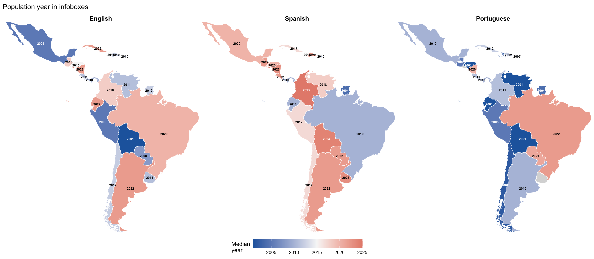
Many admin-unit infoboxes include the name of the current mayor, governor, or other executive, sometimes with a year or term range in parentheses (e.g., “Juan Pérez (2021–2025)”). The extraction below searches for four-digit years in leader-name fields (leader_name, dirigentes_nombres, prefeito, alcalde, intendente) and the explicit dirigente1_año field used in Spanish Wikipedia templates.
sa_quality_joined <- sa_quality_joined |>
mutate(infobox_leader_year = map_int(wikitext, extract_leader_year))sa_quality_joined |>
mutate(language = sa_featured_labels[lang]) |>
group_by(language, adm_level) |>
summarise(
n_articles = n(),
n_with_infobox = sum(has_infobox, na.rm = TRUE),
n_with_leader_yr = sum(!is.na(infobox_leader_year), na.rm = TRUE),
pct_of_infobox = round(100 * n_with_leader_yr / pmax(n_with_infobox, 1), 1),
pct_of_all = round(100 * n_with_leader_yr / n_articles, 1),
.groups = "drop"
) |>
knitr::kable()| language | adm_level | n_articles | n_with_infobox | n_with_leader_yr | pct_of_infobox | pct_of_all |
|---|---|---|---|---|---|---|
| English | ADM2 | 11865 | 11708 | 1156 | 9.9 | 9.7 |
| English | ADM3 | 4624 | 4581 | 277 | 6.0 | 6.0 |
| English | NA | 1 | 1 | 0 | 0.0 | 0.0 |
| Portuguese | ADM2 | 10101 | 8240 | 1868 | 22.7 | 18.5 |
| Portuguese | ADM3 | 2401 | 742 | 3 | 0.4 | 0.1 |
| Portuguese | NA | 1 | 1 | 0 | 0.0 | 0.0 |
| Quechua | ADM2 | 634 | 0 | 0 | 0.0 | 0.0 |
| Quechua | ADM3 | 2431 | 0 | 1 | 100.0 | 0.0 |
| Spanish | ADM2 | 10591 | 10372 | 4142 | 39.9 | 39.1 |
| Spanish | ADM3 | 5124 | 5062 | 1849 | 36.5 | 36.1 |
| Spanish | NA | 1 | 1 | 0 | 0.0 | 0.0 |
sa_quality_joined |>
filter(!is.na(infobox_leader_year)) |>
mutate(language = sa_featured_labels[lang]) |>
count(language, adm_level, infobox_leader_year) |>
ggplot(aes(x = infobox_leader_year, y = n, fill = adm_level)) +
geom_col(position = "stack") +
facet_wrap(~ language, scales = "free_y") +
labs(
x = "Leader year in infobox",
y = "Number of articles",
fill = "Admin level"
) +
theme_minimal(base_size = 12) +
theme(legend.position = "bottom")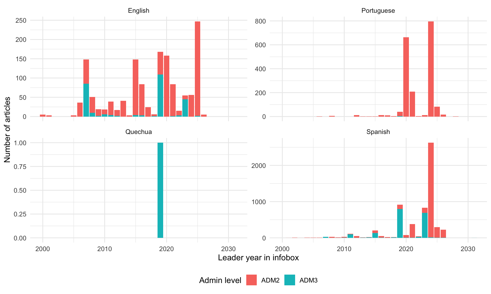
leader_year_summary <- sa_quality_joined |>
filter(!is.na(infobox_leader_year), !is.na(country)) |>
mutate(language = sa_featured_labels[lang]) |>
group_by(language, region, country) |>
summarise(
n_with_year = n(),
median_year = as.integer(median(infobox_leader_year)),
.groups = "drop"
)
leader_year_summary |>
arrange(language, region, country) |>
knitr::kable()| language | region | country | n_with_year | median_year |
|---|---|---|---|---|
| English | Central America & Caribbean | El Salvador | 1 | 2026 |
| English | Central America & Caribbean | Guatemala | 64 | 2015 |
| English | Central America & Caribbean | Haiti | 2 | 2020 |
| English | Central America & Caribbean | Honduras | 7 | 2016 |
| English | Central America & Caribbean | Mexico | 212 | 2015 |
| English | Central America & Caribbean | Panama | 2 | 2009 |
| English | Central America & Caribbean | Puerto Rico | 1 | 2022 |
| English | South America | Argentina | 17 | 2010 |
| English | South America | Bolivia | 81 | 2007 |
| English | South America | Brazil | 452 | 2025 |
| English | South America | Chile | 3 | 2018 |
| English | South America | Colombia | 300 | 2020 |
| English | South America | Paraguay | 6 | 2000 |
| English | South America | Peru | 284 | 2019 |
| English | South America | Uruguay | 1 | 2015 |
| Portuguese | Central America & Caribbean | Mexico | 2 | 2013 |
| Portuguese | South America | Brazil | 1821 | 2021 |
| Portuguese | South America | Colombia | 8 | 2008 |
| Portuguese | South America | Peru | 40 | 2019 |
| Quechua | South America | Peru | 1 | 2019 |
| Spanish | Central America & Caribbean | Costa Rica | 7 | 2016 |
| Spanish | Central America & Caribbean | Dominican Republic | 16 | 2020 |
| Spanish | Central America & Caribbean | El Salvador | 13 | 2024 |
| Spanish | Central America & Caribbean | Guatemala | 176 | 2015 |
| Spanish | Central America & Caribbean | Haiti | 1 | 2016 |
| Spanish | Central America & Caribbean | Honduras | 22 | 2018 |
| Spanish | Central America & Caribbean | Mexico | 2049 | 2024 |
| Spanish | Central America & Caribbean | Nicaragua | 22 | 2010 |
| Spanish | Central America & Caribbean | Panama | 12 | 2020 |
| Spanish | Central America & Caribbean | Puerto Rico | 9 | 2022 |
| Spanish | South America | Argentina | 38 | 2023 |
| Spanish | South America | Bolivia | 5 | 2021 |
| Spanish | South America | Brazil | 543 | 2021 |
| Spanish | South America | Chile | 27 | 2019 |
| Spanish | South America | Colombia | 1011 | 2024 |
| Spanish | South America | Ecuador | 21 | 2019 |
| Spanish | South America | Paraguay | 6 | 2021 |
| Spanish | South America | Peru | 1981 | 2019 |
| Spanish | South America | Uruguay | 18 | 2013 |
| Spanish | South America | Venezuela | 14 | 2024 |
leader_year_limits <- range(leader_year_summary$median_year, na.rm = TRUE)
year_choropleth_map(leader_year_summary, "English", leader_year_limits,
title = "English") +
year_choropleth_map(leader_year_summary, "Spanish", leader_year_limits,
title = "Spanish") +
year_choropleth_map(leader_year_summary, "Portuguese", leader_year_limits,
title = "Portuguese") +
plot_layout(guides = "collect") +
plot_annotation(title = "Leader year in infoboxes") &
theme(legend.position = "bottom")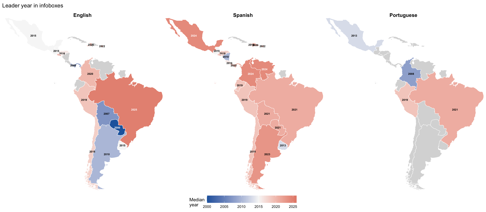
bind_rows(
sa_adm2_registry |> mutate(tier = "SA ADM2"),
sa_adm3_registry |> mutate(tier = "SA ADM3"),
newc_adm2_registry |> mutate(tier = "New countries ADM2"),
newc_adm3_registry |> mutate(tier = "New countries ADM3")
) |>
select(tier, country, class_qid, class_label, n_expected) |>
knitr::kable(caption = "All class registries used in this analysis")| tier | country | class_qid | class_label | n_expected |
|---|---|---|---|---|
| SA ADM2 | Argentina | Q952274 | department of Argentina | 386 |
| SA ADM2 | Argentina | Q13997861 | partido of Buenos Aires Province | 135 |
| SA ADM2 | Bolivia | Q1062593 | province of Bolivia | 112 |
| SA ADM2 | Chile | Q1153408 | province of Chile | 57 |
| SA ADM2 | Colombia | Q2555896 | municipality of Colombia | 1107 |
| SA ADM2 | Ecuador | Q1724017 | canton of Ecuador | 222 |
| SA ADM2 | Paraguay | Q917092 | municipality of Paraguay | 268 |
| SA ADM2 | Peru | Q509686 | province of Peru | 205 |
| SA ADM2 | Suriname | Q1539014 | ressort of Suriname | 64 |
| SA ADM2 | Uruguay | Q3685434 | municipality of Uruguay | 126 |
| SA ADM2 | Venezuela | Q3327920 | municipality of Venezuela | 352 |
| SA ADM3 | Argentina | Q3243765 | municipality in Argentina | 83 |
| SA ADM3 | Bolivia | Q1062710 | municipality of Bolivia | 341 |
| SA ADM3 | Chile | Q1840161 | commune of Chile | 485 |
| SA ADM3 | Colombia | Q5172823 | corregimiento of Colombia | 108 |
| SA ADM3 | Ecuador | Q2579179 | parish of Ecuador | 568 |
| SA ADM3 | Peru | Q2179958 | district of Peru | 1892 |
| SA ADM3 | Venezuela | Q6063801 | parish of Venezuela | 1185 |
| New countries ADM2 | Mexico | Q1952852 | municipality of Mexico | 2465 |
| New countries ADM2 | Mexico | Q2734310 | territorial demarcation of Mexico City | 16 |
| New countries ADM2 | Guatemala | Q1872284 | municipality of Guatemala | 341 |
| New countries ADM2 | El Salvador | Q3556889 | municipality of El Salvador | 45 |
| New countries ADM2 | Honduras | Q2602693 | municipality of Honduras | 298 |
| New countries ADM2 | Nicaragua | Q318727 | municipality of Nicaragua | 153 |
| New countries ADM2 | Costa Rica | Q953822 | canton of Costa Rica | 84 |
| New countries ADM2 | Panama | Q3710488 | district of Panama | 81 |
| New countries ADM2 | Cuba | Q558330 | municipality of Cuba | 171 |
| New countries ADM2 | Dominican Republic | Q6005581 | municipality of the Dominican Republic | 157 |
| New countries ADM2 | Haiti | Q1665357 | arrondissement of Haiti | 43 |
| New countries ADM2 | Puerto Rico | Q263639 | municipality of Puerto Rico | 78 |
| New countries ADM3 | Costa Rica | Q2292572 | district of Costa Rica | 495 |
| New countries ADM3 | Panama | Q3685463 | corregimiento of Panama | 698 |
| New countries ADM3 | Haiti | Q3685462 | commune of Haiti | 146 |
| New countries ADM3 | Puerto Rico | Q3677932 | barrio of Puerto Rico | 827 |
Countries where ADM3 was investigated but excluded:
| Country | Reason |
|---|---|
| Paraguay | No standard ADM3 below municipalities on Wikidata |
| Suriname | No divisions below ressorts |
| Uruguay | No standard ADM3 |
| Mexico | 75,898 localities — too large for this pipeline |
| Guatemala | No ADM3 class found on Wikidata |
| El Salvador | Only 16 cantons typed — too sparse |
| Honduras | Only 3 aldeas typed — too sparse |
| Nicaragua | No ADM3 class found |
| Cuba | Consejos populares not typed on Wikidata |
| Dominican Republic | No ADM3 class found |
| Brazil | No standard ADM3 below municipalities |
sessionInfo()R version 4.5.2 (2025-10-31)
Platform: aarch64-apple-darwin20
Running under: macOS Sequoia 15.7.7
Matrix products: default
BLAS: /System/Library/Frameworks/Accelerate.framework/Versions/A/Frameworks/vecLib.framework/Versions/A/libBLAS.dylib
LAPACK: /Library/Frameworks/R.framework/Versions/4.5-arm64/Resources/lib/libRlapack.dylib; LAPACK version 3.12.1
locale:
[1] en_US.UTF-8/en_US.UTF-8/en_US.UTF-8/C/en_US.UTF-8/en_US.UTF-8
time zone: America/Chicago
tzcode source: internal
attached base packages:
[1] stats graphics grDevices utils datasets methods base
other attached packages:
[1] tibble_3.3.1 WikipediR_1.7.1 ggplot2_4.0.3 tidyr_1.3.2
[5] purrr_1.2.2 stringr_1.6.0 dplyr_1.2.1 jsonlite_2.0.0
[9] httr_1.4.7
loaded via a namespace (and not attached):
[1] gtable_0.3.6 compiler_4.5.2 tidyselect_1.2.1 dichromat_2.0-0.1
[5] scales_1.4.0 yaml_2.3.12 fastmap_1.2.0 R6_2.6.1
[9] generics_0.1.4 knitr_1.51 htmlwidgets_1.6.4 pillar_1.11.1
[13] RColorBrewer_1.1-3 rlang_1.2.0 stringi_1.8.7 xfun_0.59
[17] S7_0.2.2 otel_0.2.0 cli_3.6.6 withr_3.0.3
[21] magrittr_2.0.5 digest_0.6.39 grid_4.5.2 rstudioapi_0.19.0
[25] lifecycle_1.0.5 vctrs_0.7.3 evaluate_1.0.5 glue_1.8.1
[29] farver_2.1.2 rmarkdown_2.31 tools_4.5.2 pkgconfig_2.0.3
[33] htmltools_0.5.9